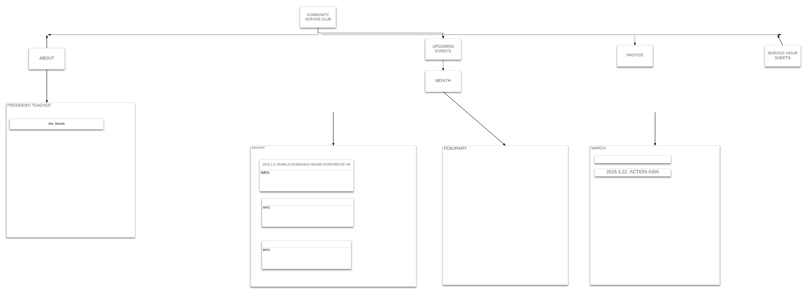

Brainstorm
Project Ideas:
- Information for project, research
- Audience: Mostly Students
- News site that have recent updates about the world
- All kinds, like sports, gossips, business, etc.
- Website for people to buy winter fair raffle tickets
Introduction to the website
We finally chose to do Ayano's and Jo-Eun's idea. It's about a website that shows and explains all kind of upcoming community service events that Mrs. Salma hosts.
Questions
- Who will be the audience for your website?
- What will be the specific purpose of your website?
- Who is the client? (Whose problem will creating this website solve? Who would be willing to pay for this website?)
- What are the objectives for the project?
- What is the success criteria? (Checklist? Rubric? Descriptors?)
- Identify the content and major categories and sub-categories for your website.
- Prioritise the content. How will it be organised? What is most important for the audience / purpose?
Answers
- The audience for our website are the people interested in gaing community service hours.
- Our main purpose of the website is to give others an oppurtunity of gaining community service hours.
- The client is Ms. Salma. It will solve the problem of the members in the community service group that have to go to everyone, just to ask them if they want to gain community service hours. The school would be willing to pay for the website.
- Our main objective is to display information of when and where each event is going to take place and for being able to access the sheets to print out for themselves.
- Success Criteraia
- Identify the content and major categories and sub-categories for your website.
- Prioritise the content. How will it be organised? What is most important for the audience / purpose?
Agile Development
- Agile Board
- Project Name: Community Service Events
- Objectives
- Flowchart

- About
Meeting
- Room 323
- Time: 3:00 ~ 4:00
President/Teacher
- Mrs.Salma
- President: Karen Yuan
- Vice President: Maggie Huang
- Upcoming Events
- Month
January
- 2015.1.2; Ronald Mcdonald House Charities of HK
- 2015.1.2/2015.1.31 KIDS4KIDS
- 2015.1.17/2015.1.18 Rogaine 24
March
- 2015.3.1 Cookie Campaign
- 2015.3.22 Action Asia
- Photos
Event
- Bread Run!
- Nov. 11
- Soap Cycling!
- Service Hour Sheets
- Story board